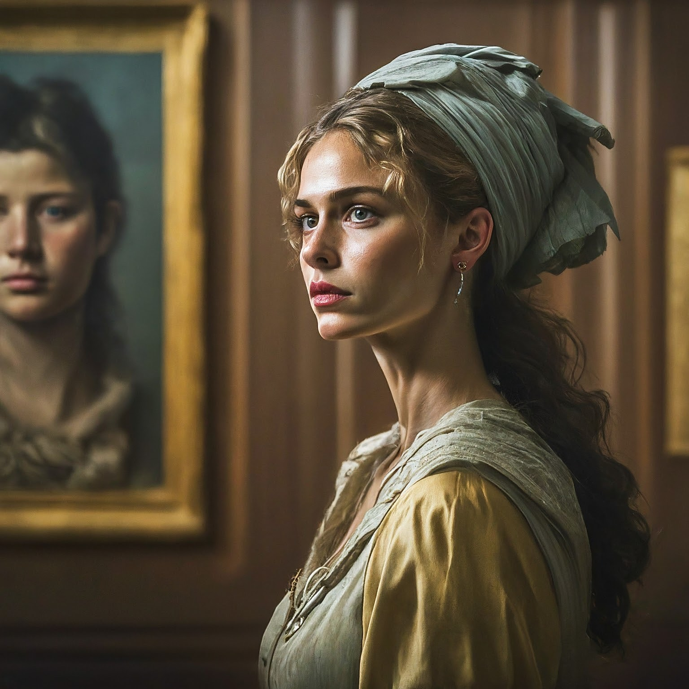
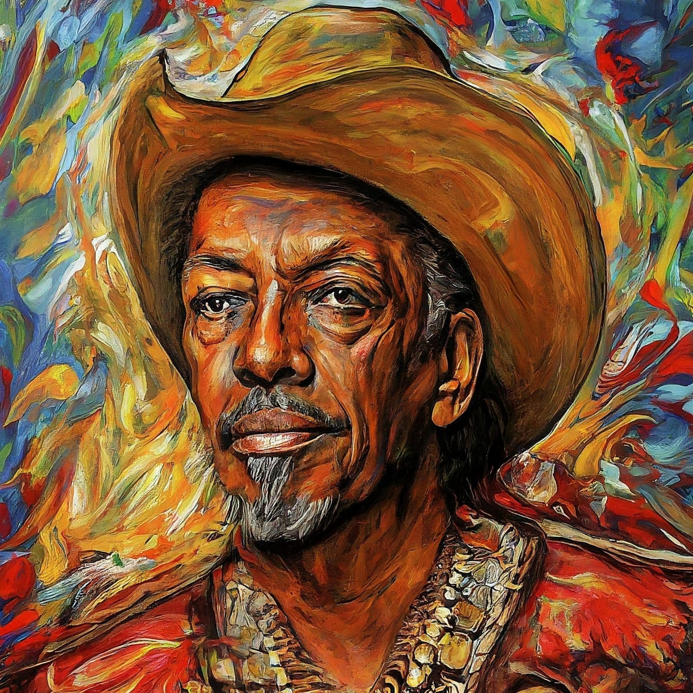
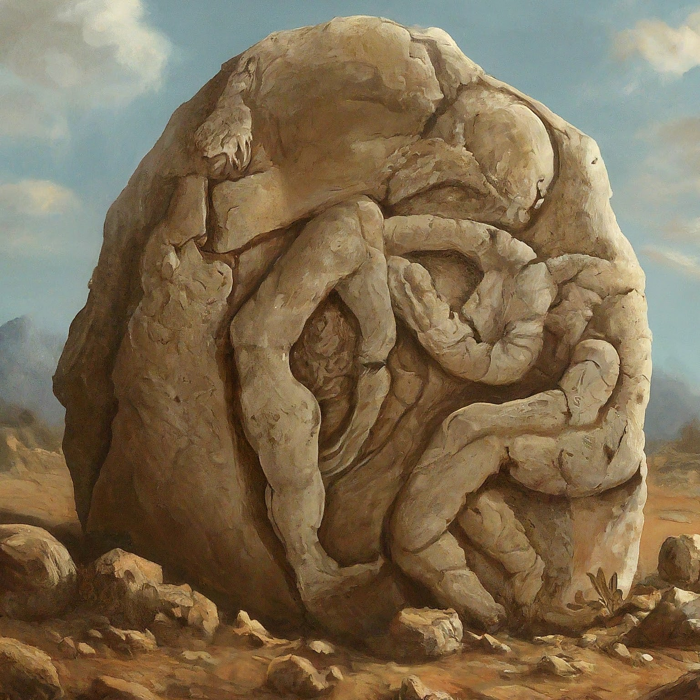

Notícia 1

Primeira notícia do "12 Artists Shortlisted for High Line Plinth Commissions | News" - Entre as propostas está uma homenagem de 30 pés de altura em arenito do artista Tuan Andrew Nguyen às estátuas de Buda destruídas pelo Talibã em 2001.
Notícia 2

Segunda: "Paris’s Picasso Museum Will Show Work by Françoise Gilot in Permanent Collection Galleries for the First Time" - Como parte da reinstalação de sua coleção permanente, o Museu Picasso em Paris agora incluirá uma galeria dedicada ao trabalho de Françoise Gilot.
Notícia 3

Terceira: "16 New Ancient Rock Art Sites Discovered In Jalapão, Brazil" - Arqueólogos descobriram 16 novos sítios de arte rupestre no Jalapão, Brasil.